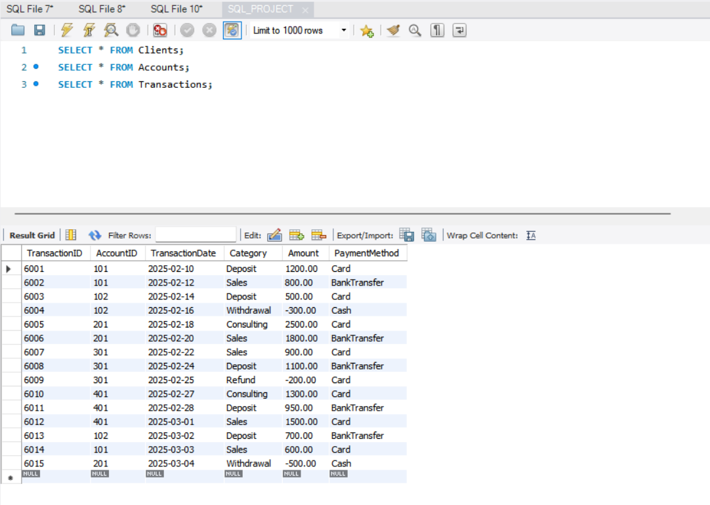
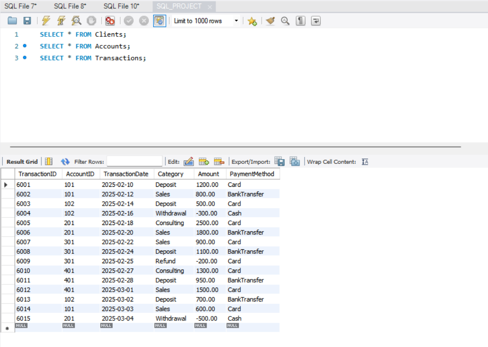

Surayas Portfolio
Python Projects
SQL Game of Thrones Project
This SQL project demonstrates my ability to design and work with relational databases.
I created a Game of Thrones-themed database to practice building tables, managing relationships,
and writing queries for analysis. The project is a fun way for me to combine my interests with technical skills
while simulating real-world financial and transactional data management.
Tools That I Used
- Python
- Lists and dictionaries to store and process data
- Loops and calculations for aggregating numbers
- Text-based charts for a quick visual overview
What I Did
- Designed a Game of Thrones-themed relational database with Clients, Accounts, and Transactions tables.
- Set up primary and foreign keys to keep the data connected and consistent.
- Populated the tables with sample data for characters, including their accounts and transactions.
- Wrote queries to summarize revenue by month, account, and house, to identify trends and totals.
- Filtered transactions to identify high-value orders, demonstrating analytical thinking.
- Captured screenshots of tables and query results to showcase my work!
 
